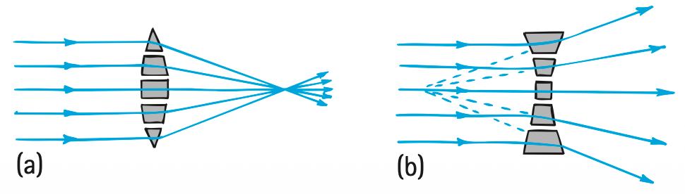
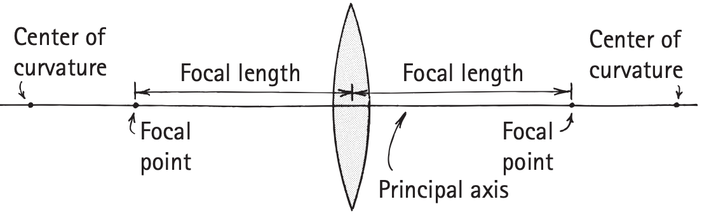
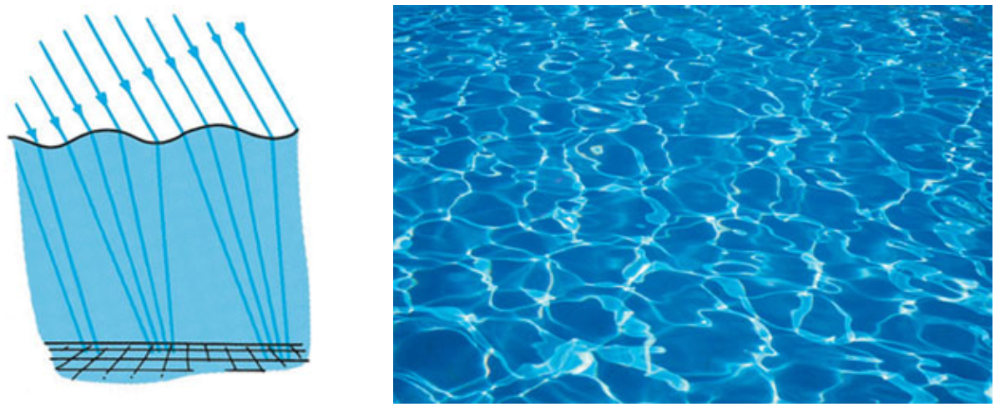
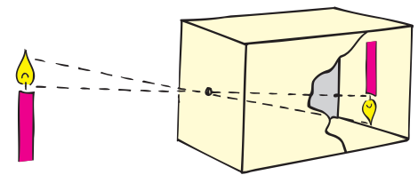

Lenses
Lenses
A very practical case of refraction occurs in lenses. We can understand a lens by analyzing equal-time paths as we did earlier, or we can assume that a lens consists of several matched prisms and blocks of glass arranged in the order shown in Figure 28.43. The prisms and blocks refract incoming parallel light rays so that they converge to (or diverge from) a point. The arrangement shown in Figure 28.43a converges the light, and we call such a lens a converging lens. Note that it is thicker in the middle and thinner at the edges.

The arrangement in Figure 28.43b is different. The middle is thinner than the edges, and it diverges the light; such a lens is called a diverging lens. Note that the prisms diverge the incident rays in a way that makes them appear to come from a single point in front of the lens. In both lenses, the greatest deviation of rays occurs at the outermost prisms because they have the largest angle between the two refracting surfaces. No deviation occurs exactly in the middle because in that region the glass faces are parallel to each other. Real lenses are not made of prisms, of course, as is indicated in Figure 28.43; they are made of a solid piece of glass with surfaces that are ground usually to a spherical curve. In Figure 28.44, we see how smooth lenses refract waves.

Some key features in lens description are shown for a converging lens in Figure 28.45. The principal axis of a lens is the line that joins the centers of curvatures of its surfaces. The focal point is the point where a beam of light parallel to the principal axis converges. Incident parallel beams that are not parallel to the principal axis focus at points above or below the focal point. All such possible points make up a focal plane. A lens has two focal points and two focal planes. When the lens of a camera is set for distant objects, the photosensitive surface is very nearly in the focal plane behind the lens in the camera. The focal length of the lens is the distance between the center of the lens and either focal point.


Image Formation by a Lens
At this moment, light is reflecting from your face onto this page. Light that reflects from your forehead, for example, strikes every part of the page. Likewise for light that reflects from your chin. Every part of the page is illuminated with reflected light from your forehead, your nose, your chin, and every other part of your face. You don’t see an image of your face on the page because there is too much overlapping of light. But put a barrier with a pinhole in it between your face and the page, and the light that reaches the page from your forehead does not overlap the light from your chin. Likewise for the rest of your face. Without this overlapping, an image of your face is formed on the page. It will be very dim because very little light reflected from your face gets through the pinhole. To see the image, you’d have to shield the page from other light sources. The same is true of the vase and flowers in Figure 28.47b.3
Practicing Physics
Make a pinhole camera. Cut out one end of a small cardboard box, and cover the end with semitransparent tracing or tissue paper. Make a clean-cut pinhole at the other end. (If the cardboard is thick, you can make the pinhole through a piece of tinfoil placed over a larger opening in the cardboard.) Aim the camera at a bright object in a darkened room, and you will see an upside-down image on the tracing paper. The tinier the pinhole, the dimmer and sharper the image. If you are in a dark room, replace the tracing paper with unexposed photographic film, cover the back so that it is light-tight, and cover the pinhole with a removable flap. You’re ready to take a picture. Exposure times differ depending principally on the kind of film and the amount of light. Try different exposure times, starting with about 3 seconds. Also try boxes of various lengths.
Rather than viewing a candle, as the sketch suggests, point your box skyward toward the Sun. The solar image on the tracing paper is clear and bright. Pinhole images of the Sun are also evident on the ground beneath a tree on a sunny day. When openings between leaves in the tree are small compared with the height of the tree, the openings behave as pinholes and cast circles of light, many overlapping, on the ground. Recall the opening photos of Chapters 1 and 27 that show what occurs at the time of a partial solar eclipse.


The first cameras had no lenses and admitted light through a small pinhole. You can see why the image is upside down by the sample rays in Figures 28.47b. Long exposure times were required because of the small amount of light admitted by the pinhole. A somewhat larger hole would admit more light, but overlapping rays would produce a blurry image. Too large a hole would allow too much overlapping and no image would be discernible. That’s where a converging lens comes in (Figure 28.47c). The lens converges light onto the screen without the unwanted overlapping of rays. Whereas the first pinhole cameras were useful for only still objects because of the long exposure time required, moving objects can be photographed with the lens camera because of the short exposure time—which is why photographs taken with lens cameras came to be called snapshots.
3A quantitative way of relating object distances to image distances is given by the thin-lens equation:
1/do + 1/di = 1/f or di = dof / (do - f)
where do is the distance of the object from the lens, di is the distance from the lens to the image, and f is the focal length of the lens.

The simplest use of a converging lens is a magnifying glass. To understand how it works, think about how you examine objects near and far. With unaided vision, a faraway object is seen through a relatively narrow angle of view and a close object is seen through a wider angle of view (Figure 28.48). To see the details of a small object, you want to get as close to it as possible for the widest-angle view. But your eye can’t focus when it is too close. That’s where the magnifying glass comes in. When you are close to the object, the magnifying glass gives you a clear enlarged image.

When we use a magnifying glass, as Chris Lee does on page 485, we hold it close to the object being examined. This is because a converging lens provides an enlarged, right-side-up image only when the object is inside the focal point (Figure 28.49). If a screen is placed at the image distance, no image appears on it because no light is directed to the image position. The rays that reach our eye, however, behave as if they came from the image position; we call the result a virtual image.

When the object is far away enough to be outside the focal point of a converging lens, a real image is formed instead of a virtual image. Figure 28.50 shows a case in which a converging lens forms a real image on a screen. A real image is upside down. A similar arrangement is used for projecting slides and motion pictures on a screen and for projecting a real image on the photosensitive area of a camera. Real images with a single lens are always upside down.

A diverging lens used alone produces a reduced virtual image. It makes no difference how far or how near the object is. When a diverging lens is used alone, the image is always virtual, right-side up, and smaller than the object. A diverging lens is often used as a “finder” on a camera. When you look at the object to be photographed through such a lens, you see a virtual image that has approximately the same proportions as the photograph.

Textbook Sections: 28.7
Learning Target: Students will use ray diagrams and conceptual lens models to explain how lenses form images.
- I can distinguish converging lenses from diverging lenses.
- I can draw simple ray diagrams for lenses.
- I can identify focal point, focal length, object distance, image distance, and magnification.
- I can distinguish real and virtual images formed by lenses.
- I can explain how lenses are used in eyes, cameras, magnifiers, glasses, and projectors.
- I can critique incorrect ray diagrams or lens explanations.